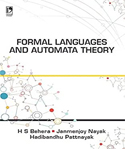

H. Swapnarekha, H. S. Behera, D. Roy, S. Das, and J. Nayak, “Competitive Deep Learning Methods for COVID-19 Detection using X-ray Images,” J. Inst. Eng. Ser. B, pp.1-14,Apr. 2021, doi: 10.1007/s40031-021-00589-3. [SPRINGER] [SCOPUS] [IMPACT FACTOR:0.88] [h-Index:13]
H. Swapnarekha, H. S. Behera, J. Nayak, and B. Naik, “Covid CT-net: A deep learning framework for COVID-19 prognosis using CT images,” J. Interdiscip. Math., vol. 24, no. 2, pp. 327–352, Feb. 2021, doi: 10.1080/09720502.2020.1857905. [Taylor & Francis][SCOPUS][IMPACT FACTOR:0.64] [h-Index:14]
P. Suresh Kumar, H. S. Behera, J. Nayak, and B. Naik, “Bootstrap aggregation ensemble learning-based reliable approach for software defect prediction by using characterized code feature,” Innov. Syst. Softw. Eng., May 2021, doi: 10.1007/s11334-021-00399-2. [SPRINGER] [ESCI, SCOPUS] [IMPACT FACTOR: 1.07] [h-Index:27]
P. Suresh Kumar, H. S. Behera, J. Nayak, and B. Naik, “A pragmatic ensemble learning approach for effective software effort estimation,” Innov. Syst. Softw. Eng., Jan. 2021, doi: 10.1007/s11334-020-00379-y. [SPRINGER] [ESCI, SCOPUS] [IMPACT FACTOR: 1.07] [h-Index:27]
D. K. K. Reddy, H. S. Behera,, J. Nayak, B. Naik, U. Ghosh, and P. K. Sharma, “Exact greedy algorithm based split finding approach for intrusion detection in fog-enabled IoT environment,” Journal of Information Security and Applications, vol. 60, no. June, p. 102866, Aug. 2021, doi: 10.1016/j.jisa.2021.102866. [ELSEVIER, SCIENCEDIRECT] [SCIE, SCOPUS] [IMPACT FACTOR: 3.872] [h-Index:40]
D. K. Reddy, H. S. Behera, J. Nayak, P. Vijayakumar, B. Naik, and P. K. Singh, “Deep neural network based anomaly detection in Internet of Things network traffic tracking for the applications of future smart cities,” Transactions on Emerging Telecommunications Technology, vol. 32, no. 7, pp. 1–26, Jul. 2021, doi:10.1002/ett.4121. [WILEY] [SCIE, SCOPUS] [IMPACT FACTOR: 2.638] [h-Index:47]
K.K. Sahu, S.C. Nayak, H. S. Behera, Multi-Step-Ahead Exchange Rate Forecasting For South Asian Countries Using Multi-Verse Optimized Multiplicative Functional Link Neural Networks, Karbala International Journal of Modern Science, 7.1 (2021): 48-60 (University of Kerbala, Scopus Journal, Unpaid) [SCOPUS] [IMPACT FACTOR: 2.93] [h-Index:17]
Pattanayak, R.M., H. S. Behera, Panigrahi, S.: A Non-Probabilistic Neutrosophic Entropy Based Method For High-Order Fuzzy Time-Series Forecasting. Arabian Journal for Science and Engineering, 1-23 (2021), Springer, ( SCI, Scopus ). (IF: 2.334). https://doi.org/10.1007/s13369-021-05718-0 [SCI, SCOPUS] [IMPACT FACTOR: 2.334] [h-Index:37]
Das, H., Naik, B., & H. S. Behera, (2021). ”Optimal Selection of Features using Artifificial Electric Field Algorithm for Classification”, Arabian Journal for Science and Engineering, Springer. DOI: https://doi.org/10.1007/s13369-021-05486-x [SCI, SCOPUS] [IMPACT FACTOR: 2.334] [h-Index:37]
Das, H., Naik, B., & H. S. Behera, (2020). ”A Jaya Algorithm based Wrapper Method for Optimal Feature Selection in Supervised Classification”. Journal of King Saud University - Computer and Information Sciences, DOI: 10.1016/j.jksuci.2020.05.002 (SCI, Scopus) IF: 13.473 (In Press) [ELSEVIER, ScienceDirect] [ SCOPUS, SCIE ] [IMPACT FACTOR: 13.473] [h-Index:33]
Das, H., Naik, B., H. S. Behera, Jaiswal, S., Mahato, P., & Rout, M., (2020). ”Biomedical Data Analysis using Neuro-Fuzzy Model with Post-feature Reduction”, Journal of King Saud University - Computer and Information Sciences, DOI: 10.1016/j.jksuci.2020.01.007 [ELSEVIER, ScienceDirect] [SCIE, SCOPUS] [IMPACT FACTOR: 13.473] [h-Index:33]
Pattanayak, R.M., H. S. Behera, Panigrahi, S.: A Novel Probabilistic Intuitionistic FuzzySet Based Model for High Order Fuzzy Time Series Forecasting. Engineering Applications of Artificial Intelligence, https://doi.org/10.1016/j.engappai.2020.104136 [ELSEVIER, ScienceDirect] [Indexing: SCI, SCOPUS] [IMPACT FACTOR: 2.334] [h-Index:104]
H. Swapnarekha, H. S. Behera, J. Nayak, and B. Naik, “Role of intelligent computing in COVID-19 prognosis: A state-of-the-art review,” Chaos, Solitons & Fractals, vol. 138, p. 109947, Sep. 2020, doi: 10.1016/j.chaos.2020.109947. [ELSEVIER, SCIENCEDIRECT] [SCI] [IMPACT FACTOR: 3.764] [h-Index:139]
P. S. Kumar, H. S. Behera, K. Anisha Kumari, J. Nayak, and B. Naik, “Advancement from neural networks to deep learning in software effort estimation: Perspective of two decades,” Computer Science Review, vol. 38. p. 100288, Nov. 2020, doi: 10.1016/j.cosrev.2020.100288. [ELSEVIER, SCIENCEDIRECT] [Indexing: SCIE, SCOPUS] [IMPACT FACTOR: 7.707] [h-Index:44]
Pattanayak, R.M., Panigrahi, S., H. S. Behera: High-Order Fuzzy Time Series Forecasting by Using Membership Values Along with Data and Support Vector Machine. Arabian Journal for Science and Engineering, Springer ( SCI, Scopus ), 45, 10311–10325 (2020). https://doi.org/10.1007/s13369-020-04721-1 [Indexing: SCI, SCOPUS] [IMPACT FACTOR: 2.334] [h-Index:37]
Das, H., Naik, B., & H. S. Behera, (2020). ”A Hybrid Neuro-Fuzzy and Feature Reduction Model for Classification”, Volume:2020, pp. 1-15, Advances in Fuzzy System, Hindawi. DOI: 10.1155/2020/4152049 [SCOPUS] [IMPACT FACTOR: 1.71] [h-Index:19]
K.K. Sahu, S.C. Nayak, H. S. Behera, Forecasting currency exchange rate time series with fireworks-algorithm-based higher order neural network with special attention to training data enrichment, Computer Science 21.4 (2020): 463-489. [SCOPUS ] [IMPACT FACTOR: 0.81] [h-Index:28]
Sibarama Panigrahi, and H. S. Behera. "A study on leading machine learning techniques for high order fuzzy time series forecasting." Engineering Applications of Artificial Intelligence 87 (2020): 103245. ISSN: 0952-1976. [ELSEVIER, ScienceDirect], [SCI, Scopus] [IMPACT FACTOR: 6.21] [h-Index:104]
Sibarama Panigrahi, and H. S. Behera. "Time Series Forecasting Using Differential Evolution-Based ANN Modelling Scheme." Arabian Journal for Science and Engineering 45.12 (2020): 11129-11146. ISSN: 2191-4281 [Springer] [IMPACT FACTOR:2.33][SCI, Scopus] [h-Index: 43]
Sibarama Panigrahi, and H. S. Behera. "Nonlinear time series forecasting using a novel self-adaptive TLBO-MFLANN model." International Journal of Computational Intelligence Studies 8, no. 1-2, 4-26, 2019. [SCIE, SCOPUS] [IMPACT FACTOR: 1.83] [H-index:38]
T. Dash and H. S. Behera, “A comprehensive study on evolutionary algorithm-based multilayer perceptron for real-world data classification under uncertainty,” Expert Syst., vol. 36, no. 1, p. e12327, Feb. 2019, doi: 10.1111/exsy.12327.
Bighnaraj Naik, Janmenjoy Nayak and H. S. Behera, “A self adaptive harmony search based functional link higher order ANN for non-linear data classification”, Neurocomputing, 2016. [ELSEVIER, ScienceDirect] [SCOPUS] [IMPACT FACTOR: 5.719] [h-Index:143]
S. C. Nayak, B. B. Misra, and H. S. Behera, “Efficient financial time series prediction with evolutionary virtual data position exploration,” Neural Comput. Appl., vol. 31, pp. 1053–1074, 2019, doi: 10.1007/s00521-017-3061-1.
Sibarama Panigrahi, and H. S. Behera. “A computationally efficient method for high order fuzzy time series forecasting.” Journal of Theoretical & Applied Information Technology, 96, pp.7215-7226, 2018. [Scopus, SCI, UGC Care Listed] [IMPACT FACTFOR: 0.60] [H-index:29]
S. C., Nayak, B. B., Mishra, and H. S. Behera, “Artificial Chemical Reaction Optimization of Neural Networks for Efficient Prediction of Stock Market Index”, Ain Shams Engineering Journal, ISSN: 2090-4479, 2015, DOI: 10.1016/j.asej.2014.12.013,2015. [ELSEVIER, ScienceDirect] [ SCOPUS-SCIE] [IMPACT FACTOR: 3.180] [h-Index:46]
Nayak, J., Naik, B., H. S. Behera, & Abraham, A. (2016). Elitist teaching–learning-based optimization (ETLBO) with higher-order Jordan Pi-sigma neural network: a comparative performance analysis. Neural Computing and Applications, 30(5), 1445–1468. doi:10.1007/s00521-016-2738-1.
B. Naik, J. Nayak, and H. S. Behera, “FLANN + BHO: A Novel Approach for Handling Nonlinearity in System Identification,” Int. J. Rough Sets Data Anal., vol. 5, no. 1, pp. 13–33, Jan. 2018, doi: 10.4018/IJRSDA.2018010102.
S. C. Nayak, B. B. Misra, and H. S. Behera, “ACFLN: artificial chemical functional link network for prediction of stock market index,” Evol. Syst., vol. 10, no. 4, pp. 567–592, 2019, doi: 10.1007/s12530-018-9221-4.
S. Panigrahi and H. S. Behera, “A computationally efficient method for high order fuzzy time series forecasting,” J. Theor. Appl. Inf. Technol., vol. 96, no. 21, pp. 7215–7226, 2018.
S. C. Nayak, B. B. Misra, and H. S. Behera, “Artificial chemical reaction optimization of neural networks for efficient prediction of stock market indices,” Ain Shams Eng. J., vol. 9, no. 4, pp. 1731–1744, 2015, doi: http://dx.doi.org/10.1016/j.asej.2015.07.015.
S. C., Nayak, B. B., Mishra, and H. S. Behera, “Exploration and Incorporation of Virtual Data Position for Efficient Forecasting of Financial Time Series”, International Journal of Industrial and Systems Engineering, ISSN: 1748-5037, 2015. [Inderscience] [SCOPUS] [IMPACT FACTOR: 0.85] [h-Index:27]
Bighnaraj Naik, Janmenjoy Nayak, H. S. Behera and A. Abraham, “An improved harmony search-based functional link higher order ANN for nonlinear data classification”, International Journal of Intelligent Systems Design and Computing, ISSN: 2052-8477, 2015. [Inderscience][SCOPUS] [IMPACT FACTOR: 0.78]
Sibarama Panigrahi, and H. S. Behera. "A hybrid ETS–ANN model for time series forecasting." Engineering Applications of Artificial Intelligence 66 (2017): 49-59. ISSN: 0952-1976 [ELSEVIER, ScienceDirect] [SCI, Scopus] [IMPACT FACTOR: 6.21] [h-Index:104]
P. K. Das, H. S. Behera, P. K. Jena, and B. K. Panigrahi. An Intelligent Multi- Robot Path Planning in a Dynamic Environment Using Improved Gravitational Search Algorithm. International Journal of Automation and Computing, Vol-7, pages 1-13, 2016.[SPRINGER][Indexing: SCI, SCOPUS] [IMPACT FACTOR: 3.17] [h-Index:36]
Janmenjoy Nayak, Bighnaraj Naik, H. S. Behera “Solving nonlinear Classification Problems with Black Hole Optimization and Higher Order Jordan Pi-sigma Neural Network: A Novel Approach”, International Journal of Computational System Engineering, 2016. [Inderscience] [ SCIE, SCOPUS] [IMPACT FACTOR: 1.838] [h-Index:21]
Bighnaraj Naik, Janmenjoy Nayak and H. S. Behera, “An efficient FLANN Model with CRO based Gradient Descent Learning for Classification”, International Journal of Business Information Systems(IJBIS), Inderscience, Vol.21, No.1, pp.73 – 116, ISSN: 1746-0972, 2016. [Inderscience] [SCOPUS] [IMPACT FACTOR: 0.95] [h-Index:26]
D. P., Kanungo, Janmenjoy Nayak, B., Naik and H. S. Behera, “Hybrid Clustering using Elitist Teaching Learning based Optimization- An Improved Hybrid Approach of TLBO”, International Journal of Rough Sets and Data Analysis (IJRSDA), ISSN: 2334-4598,Vol. 3(1), pp. 1-19, 2016. [IGI-Global], [ACM Digital Library, Google Scholar]
P.K. Das, H. S. Behera, S. Das, H.K. Tripathy, B.K. Panigrahi, S.K. Pradhan, “A Hybrid Improved PSO-DV Algorithm for Multi-Robot Path Planning in a Clutter Environment”, Neurocomputing, 2015. [ELSEVIER, ScienceDirect] [SCOPUS] [IMPACT FACTOR: 5.719] [h-Index:143]
P.K. Das, H. S. Behera, B.K. Panigrahi, “A hybridization of an Improved Particle Swarm optimization and Gravitational Search Algorithm for Multi-Robot Path Planning”, Swarm and Evolutionary Computation, ISSN: 2210-6502, 2015 [ELSEVIER, ScienceDirect] [SCI, SCOPUS] [IMPACT FACTOR: 7.177] [h-Index:65]
Bighnaraj Naik, Janmenjoy Nayak and H. S. Behera, “A TLBO based gradient descent learning-functional link higher order ANN: An efficient model for learning from non-linear data”, Journal of King Saud University - Computer and Information Sciences, ISSN: 1319-1578, 2016 [ELSEVIER, ScienceDirect] [SCIE, SCOPUS] [IMPACT FACTOR: 13.473][h-Index:33]
P. K. Das, H. S. Behera, and B. K. Panigrahi, “Intelligent-based multi-robot path planning inspired by improved classical Q-learning and improved particle swarm optimization with perturbed velocity,” Eng. Sci. Technol. an Int. J., vol. 19, no. 1, pp. 651–669, 2016, doi: 10.1016/j.jestch.2015.09.009.
Bighnaraj Naik, Janmenjoy Nayak and H. S. Behera, “A Global-best Harmony Search based Gradient Descent Learning FLANN (GbHS-GDL-FLANN) for Data Classification”, Egyptian Informatics Journal, ISSN: 1110-8665, 2015. [ELSEVIER, ScienceDirect] [SCIE] [IMPACT FACTOR: 3.943] [h-Index:34]
Janmenjoy Nayak, Bighnaraj Naik, D. P., Kanungo, H. S. Behera “A Hybrid Elicit Teaching Learning based Optimization with Fuzzy c-means (ETLBO-FCM) Algorithm for Data Clustering”, Ain Shams Engineering Journal, DOI: http://dx.doi.org/10.1016/j.asej.2016.01.010, 2016. [ELSEVIER, ScienceDirect] [SCIE SCOPUS] [IMPACT FACTOR: 3.180] [h-Index:46]
S. C. Nayak, B. B. Misra, and H. S. Behera, “Efficient forecasting of financial time-series data with virtual adaptive neuro-fuzzy inference system,” Int. J. Bus. Forecast. Mark. Intell., vol. 2, no. 4, p. 379, 2016, doi: 10.1504/ijbfmi.2016.10000971.
K.K.Sahu, S.R.Sahu, S.C.Nayak, H. S. Behera “Forecasting Foreign Exchange Rates Using CRO Based Different Variants of FLANN and Performance Analysis”, International Journal of Computational System Engineering, 2016. [Inderscience] [SCIE, SCOPUS] [IMPACT FACTOR: 1.838] [h-Index:21]
K.K. Sahu, S.R. Sahu, G.R. Biswal, P.K. Sahu, H. S. Behera, Chemical reaction optimisation : a hybrid technique applied to functional link artificial neural networks with least mean square learning for foreign exchange rates forecasting, International Journal of Swarm Intelligence 2.2-4 (2016): 254-282. [InderScience] [Asian Digital Library, cnpLINKer (CNPIEC), Google Scholar, J-Gate, ProQuest Advanced Technologies Database with Aerospace]
S.C.Nayak, B.Misra, H. S. Behera “Fluctuation prediction of stock market index by adaptive evolutionary higher order neural networks”, International Journal of Swarm Intelligence, ISSN print: 2049-4041, Vol – 2, Issue – 2-4, pp – 229-253, 2016. [InderScience] [Asian Digital Library, cnpLINKer (CNPIEC), Google Scholar, J-Gate, ProQuest Advanced Technologies Database with Aerospace]
S. C., Nayak, B. B., Mishra, and H. S. Behera, “An adaptive second order neural network with genetic algorithm based training (ASONN-GA) to forecast the closing prices of the stock market”, International Journal of Applied Metaheuristic Computing, 2015. [IGI Global] [ACM Digital Library, DBLP, INSPEC, Google Scholar] [IMPACT FACTOR: 0.6607] [h-Index:4]
Janmenjoy Nayak, Bighnaraj Naik, and H. S. Behera. "A novel Chemical Reaction Optimization based higher order Neural Network (CRO-HONN) for nonlinear classification." Ain Shams Engineering Journal, Volume 6, Issue 3, September 2015, pp. 1069-1091, ISSN: 2090-4479, SNIP: 0.932, DOI: 10.1016/j.asej.2014.12.013, 2015. [ELSEVIER, ScienceDirect] [ SCOPUS-SCIE] [IMPACT FACTOR: 3.180] [h-Index:46]
S R Sahu and H. S. Behera “A hybrid CRO-based FLANN for financial stock market forecasting” International Journal of Data Analysis Techniques and Strategies, Inderscience (Scopus, ACM Digital Library, Google Scholar, Inspec ,Institution of Engineering and Technology), 2015. [SCOPUS] [IMPACT FACTOR: 0.50] [h-Index:15]
Janmenjoy Nayak, Bighnaraj Naik, and H. S. Behera. "A novel nature inspired firefly algorithm with higher order neural network: Performance analysis”, Engineering Science and Technology, an International Journal, ISSN: 2215-0986, 2015 [ELSEVIER, ScienceDirect] [ SCOPUS-SCIE] [IMPACT FACTOR: 4.36] [h-Index:50]
P.K. Das, H. S. Behera, B.K. Panigrahi, “An Intelligent Multi-Robot Path Planning in a dynamic environment using Improved Gravitational Search Algorithm”, Journal of Electrical Systems and Information Technology, ISSN: 2314-7172,2015 [ELSEVIER, ScienceDirect]
H. S. Behera, Janmenjoy Nayak, M., Nanda and K., Nayak, “A Novel Hybrid Approach for Real World Data Clustering Algorithm based on Fuzzy C-means and Firefly Algorithm (FCM-FA)”, International Journal of Fuzzy Computation and Modelling, ISSN : 2052-353X, Vol. 1(4), pp. 431-448, 2015. [Inderscience]
Janmenjoy Nayak, Bighnaraj Naik and H. S. Behera. "A Comprehensive Survey on Support Vector Machine in Data Mining Tasks: Applications & Challenges." International Journal of Database Theory and Application, Vol. 8(1), pp. 169-186, 2014. [Google Scholar, ULRICH] [IMPACT FACTOR: 0.242] [h-Index:4]
S.C.Nayak, B.B.Mishra and H. S. Behera, “Impact of Data Normalization on Stock Index Forecasting”, International Journal of Computer Information Systems and Industrial Management Applications, ISSN 2150-7988, Vol 6, pp. 257 – 269, 2014.[SCI, SCOPUS][IMPACT FACTOR: 0.33] [h-index:6]
Archana Baral and H. S. Behera, “A Novel Chemical Reaction Based Clustering and its Performance Analysis”, International Journal of Business Intelligence and Data Mining, ISSN: 1743-8187, Vol 8 No. 2, pp 184-198, 2013. [Inderscience,ACM Digital Library] [SCOPUS] [IMPACT FACTOR: 0.61] [h-Index:19]
JosabantaKarali, SibaramaPanigrahi and H. S. Behera, “A Novel Differential Evolution Based Algorithm for Higher Order Neural Network Training”, Journal of Theoretical and Applied Information Technology E-ISSN 1817-3195 / ISSN 1992-8645, Vol. 56, Issue No. 2, pp 355-361, Oct 2013. [ELSEVIER, ScienceDirect] [ SCOPUS] [IMPACT FACTOR: 0.60] [h-Index:29]
D. P., Kanungo, Janmenjoy Nayak, B., Naik and H. S. Behera, “Hybrid Clustering using Elitist Teaching Learning based Optimization- An Improved Hybrid Approach of TLBO”, International Journal of Rough Sets and Data Analysis (IJRSDA), ISSN: 2334-4598,Vol. 3(1), pp. 1-19, 2016. [IGI-Global], [ACM Digital Library, Google Scholar]
K.K.Sahu, SibaramaPanigrahi and H. S. Behera, “A novel Chemical Reaction Optimization Algorithm for Higher Order Neural Network Training”, Journal of Theoretical and Applied Information Technology, E-ISSN 1817-3195 / ISSN 1992-8645, IF: 1.71, Vol. 53, issue 3, July 2013, pp 402-409. [ELSEVIER, ScienceDirect] [ SCOPUS] [IMPACT FACTOR: 0.60] [h-Index:29]
Y. Karali, M. Modi, S. Biswal, and H. S. Behera, “Improved Dynamic Priority Driven Earliest Deadline First ( IDPDEDF ) Algorithm for Real Time System,” vol. 4, no. 4, p. 2013, 2013.
Y. Karali, D. K. Singh, R. B. Lyngdoh, and H. S. Behera, “Performance Analysis of Hard and Fuzzy Clustering Using Uniform Distribution of Dataset,” vol. 4, no. 5, p. 2013, 2013.
B.Biswal, H. S. Behera, R.Bisoi and P.K.Dash “Classification of Power Quality Data Using Decision Tree and Chemotactic Differential Evolution Based Fuzzy Clustering” Swarm and Evolutionary Computation, ISSN: 2210-6502, Vol. 4, pp. 12-24, 2012. [ELSEVIER, ScienceDirect] [SCI, SCOPUS] [IMPACT FACTOR: 7.177] [h-Index:65]
P. KDas, S. C. Mandhata, H. S. Behera, and S. N. Patro, “An Improved Q-learning Algorithm for Path-Planning of a Mobile Robot,” Int. J. Comput. Appl., vol. 51, no. 9, pp. 40–46, 2012, doi: 10.5120/8073-1468.
“Urgency Based Dynamic Time Quantum Round Robin Algorithm for Soft Real Time Systems ( UBDTRR ),” vol. 3, no. 2, p. 2012, 2012.
S. C. Nayak, B. B. Misra, and H. S. Behera, “Index Prediction with Neuro-Genetic Hybrid Network: A Comparative Analysis of Performance.”
H. S. BeheraJ. of G. R. in C. Science, “Design And Performance Evaluation Of The Advance Mix Job With Dynamic Quantum Round Robin Scheduling Algorithm For Real Time Systems,” vol. 3, no. 3, p. 2012, 2012.
H. S. Behera H. Khalil, A. Basim, and A. Alaasam, “Priority Based Dynamic Round Robin with Intelligent Time Slice and Highest Response Ratio Next Algorithm for Soft Real Time System,” vol. 2, pp. 120–124, 2013.
H. S. Behera, R. Mohanty, J. Panda, D. Thakur, and S. Sahoo, “Experimental Analysis of New Fair-Share Scheduling Algorithm with Weighted Time Slice for Real Time Systems,” vol. 2, no. 2, p. 2011, 2011.
H. S. Behera, R. Mohanty, S. Sahu, and B. Sourav Kumar, “Comparative Performance Analysis of Multi-Dynamic Time Quantum Round Robin (Mdtqrr) Algorithm With Arrival Time,” Indian J. Comput. Sci. Eng., vol. 2, no. 2, pp. 262–271, 2011.
H. S. Behera, J. Panda, D. Thakur, and S. Sahoo, “A New Proposed Two Processor Based CPU Scheduling Algorithm with Varying Time quantum for Real Time Systems,” J. Glob. Res. Comput. Sci., vol. 2, no. 4, pp. 81–87, 2011.
H. S. Behera, S. Sabyasachi, and B. Sourav Kumar, “Weighted Mean Priority Based Scheduling for Interactive Systems,” vol. 2, no. 6, pp. 55–63, 2011.
H. S. Behera, P. K. Dash and B Biswal, “Power Quality Time Series Data Mining using S-Transform and Fuzzy Expert System” Journal of Applied Soft Computing, ISSN No. 1568-4946, IF: 2.970, Vol 10, Issue 3, pp 945-955, 2010. [ELSEVIER, ScienceDirect] [SCI, SCOPUS] [IMPACT FACTOR: 6.725] [h-Index:143]
P. K. Dash, H. S. Behera and IWC Lee "Time Sequence Data Mining using Time- Frequency Analysis and Soft computing Techniques", Journal of Applied Soft Computing, ISSN No. 1568-4946, IF: 2.970, Vol:8 Issue 1, pp. 212-226, Jan 2008. [ELSEVIER, ScienceDirect] [SCI, SCOPUS] [IMPACT FACTOR: 6.725] [h-Index:143]
Das, H., Naik, B., & H. S. Behera, (2020). ”Medical Disease Analysis using Neuro-Fuzzy with Feature Extraction Model for Classification”,Volume: 18, pp. 1-12, Informatics in Medicine Unlocked, DOI: 10.1016/j.imu.2019.100288 [ELSEVIER, ScienceDirect] [SCOPUS] [IMPACT FACTOR: 2.110] [h-Index:21]
P.K., Das, H. S. Behera, S.K., Pradhan, H.K., Tripathy and P.K., Jena 2017. “Improved real time A*-fuzzy controller for improving multi-robot navigation and its performance analysis”. International Journal of Data Science, 2(2), pp.105-137. [Inderscience]
S. R., Sahu, D.P., Kanungo, and H. S. Behera “A Modified Fruit Fly Optimization for Classification of Financial Distress using FLANN”, International Journal of Data Science (IJDS), 2, no. 2 (2017): 155-172. [Inderscience]
Nayak, S. C., Misra, B. B., & H. S. Behera, Improving Performance of Higher Order Neural Network using Artificial Chemical Reaction Optimization: A Case Study on Stock Market Forecasting. Applied Artificial Higher Order Neural Networks for Control and Recognition, IGI Global, 253, 2016.
Nayak, S. C., Misra, B. B., & H. S. Behera, Adaptive Hybrid Higher Order Neural Networks for Prediction of Stock Market Behavior. Applied Artificial Higher Order Neural Networks for Control and Recognition, IGI Global, 174, 2016.
Guest Editor of International Journal of Computational Intelligence Studies, Inderscience Publication, Switzerland
Guest Editor of Neural Computing and Application (Journal), Springer Publication, USA
Guest Editor of Int. J. of Swarm Intelligence, Inderscience Publication, Switzerland
Guest Editor of Evolutionary Intelligence (Journal), Springer Publication, USA
Guest Editor of International Journal of Computational Systems Engineering, Inderscience Publication, Switzerland
Volume Editor of AISC Springer Proceeding of International Conference ICCIDM-2017, at VSSUT, Burla, Odisha.
Volume Editor of AISC Springer Proceeding of International Conference ICCIDM-2018, at VSSUT, Burla, Odisha.
Volume Editor of AISC Springer Proceeding of International Conference CIPR-2018, at IIEST Shibpur, West Bengal.
D. K. K. Reddy, H. S. Behera, G. M. S. Pratyusha, and R. Karri, “Ensemble Bagging Approach for IoT Sensor Based Anomaly Detection,” in Lecture Notes in Electrical Engineering, vol. 702, 2021, pp. 647–665. [SPRINGER] [SCOPUS]
H. S. Rekha, H. S. Behera, J. Nayak, and B. Naik, “Deep Learning for COVID-19 Prognosis: A Systematic Review,” in Lecture Notes in Electrical Engineering, 2021, vol. 702, pp. 667–687, doi: 10.1007/978-981-15-8439-8_53. [SPRINGER] [SCOPUS]
H. Swapna Rekha, J. Nayak, and H. S. Behera, “Pi-Sigma Neural Network: Survey of a Decade Progress,” in Advances in Intelligent Systems and Computing, 2020, vol. 1120, pp. 429–441, doi: 10.1007/978-981-15-2449-3_37. [SPRINGER] [Scopus]
P. Suresh Kumar andH. S. Behera, “Estimating Software Effort Using Neural Network: An Experimental Investigation,” in Computational Intelligence in Pattern Recognition, 2020, vol. 1120, pp. 165–180, doi: 10.1007/978-981-15-2449-3_14. [SPRINGER] [SCOPUS]
P. Suresh Kumar and H. S. Behera, “Role of Soft Computing Techniques in Software Effort Estimation: An Analytical Study,” in Computational Intelligence in Pattern Recognition, 2020, pp. 807–831, doi: 10.1007/978-981-13-9042-5_70. [SPRINGER] [SCOPUS]
D. K. K. Reddy and H. S. Behera, “Software Effort Estimation Using Particle Swarm Optimization: Advances and Challenges,” in Computational Intelligence in Pattern Recognition, 2020, 2020, pp. 243–258, doi: 10.1007/978-981-15-2449-3_20. [SPRINGER] [SCOPUS]
Pattanayak, R. M.,H. S. Behera, & Panigrahi, S.: A multi-step-ahead fuzzy time series forecasting by using hybrid chemical reaction optimization with pi-sigma higher-order neural network. In: Computational Intelligence in Pattern Recognition. pp. 1029–1041 (2020), Springer, Singapore. SPRINGER International Publishing. https://doi.org/10.1007/978-981-13-9042-5_88 [SPRINGER] [SCOPUS]
Pattanayak, R. M., H. S. Behera, & Panigrahi, S.: A novel Hybrid Differential Evolution-PSNN for Fuzzy Time Series forecasting. In: Computational Intelligence in Data Mining. pp. 675–687 (2020), Springer, Singapore. SPRINGER International Publishing https://doi.org/10.1007/978-981-13-8676-3_57 [SPRINGER] [SCOPUS].
Pattanayak, R. M., H. S. Behera, & Rath, R.K.: A Higher Order Neuro-Fuzzy Time Series Forecasting Model Based on Un-equal Length of Interval. In: International Conference on Application of Robotics in Industry using Advanced Mechanisms. pp. 34–45 (2020). SPRINGER International Publishing, https://doi.org/10.1007/978-3-030-30271-9_4 [SPRINGER][SCOPUS].
Das, H., Naik, B., & H. S. Behera (2020). An Experimental Analysis of Machine Learning Classification Algorithms on Biomedical Data. In Proceedings of the 2nd International Conference on Communication, Devices and Computing (pp. 525-539). [Springer] [SCOPUS]
S. Panigrahi, H. S. Behera "Fuzzy Time Series Forecasting: A Survey," Computational Intelligence in Data Mining. Springer, Singapore, 2020. 641-651.ISBN:978-981-10-8054-8[Springer] [SCOPUS]
S. Panigrahi, H. S. Behera "An Adaptive Fuzzy Filter-Based Hybrid ARIMA-HONN Model for Time Series Forecasting," Computational Intelligence in Data Mining. Springer, Singapore, 2019. 841-850.ISBN:978-981-10-8054-8. [Springer] [SCOPUS]
K.K. Sahu, S.C. Nayak, H. S. Behera, Towards Designing and Performance Analysis of Evolving Higher Order Neural Networks for Modeling and Forecasting Exchange Rate Time Series Data, in: Proceedings of ICETIT 2019. Lecture Notes in Electrical Engineering, Springer International Publishing, Cham, 2020: pp. 258–268. [Springer] [SCOPUS]
S. Panigrahi, H. S. Behera, “Time Series Forecasting using a hybrid Jaya-FLANN model,” In 2018 International Conference on Recent Innovations in Electrical, Electronics & Communication Engineering (ICRIEECE), 2018, pp. 3402-3407. IEEE. [Springer] [SCOPUS]
Pattanayak R.M., H. S. Behera: Higher order neural network and its applications: A comprehensive survey. In: Advances in Intelligent Systems and Computing. pp. 695–709 (2018), Springer, Singapore. SPRINGER International Publishing. [SCOPUS] https://doi.org/10.1007/978-981-10-7871-2_67
Das, Himansu, Bighnaraj Naik, and H. S. Behera. "Classification of diabetes mellitus disease (DMD): a data mining (DM) approach." In Progress in computing, analytics and networking, pp. 539-549. Springer, Singapore, 2018. [Springer] [SCOPUS]
Nayak, Janmenjoy, BighnarajNaik, and H. S. Behera, “Optimizing a Higher Order Neural Network Through Teaching Learning Based Optimization Algorithm”, Advances in Intelligent Systems and Computing, Volume 410, pp 57-71, Springer, 2016, ISBN: 978-81-322-2734-2. [SCOPUS]
Nayak, S. K., Nayak, S.C. and H. S. Behera, “Evolving Low Complex Higher Order Neural Network Based Classifiers for Medical Data Classification”, Advances in Intelligent Systems and Computing, Volume 411, pp 415-425, Springer, 2016, ISBN: 978-81-322-2729-8. [SCOPUS]
D. P. Kanungo, JanmenjoyNayak, Bighnaraj Naik & H. S. Behera, “Non-Linear Classification using Higher Order Pi-Sigma Neural Network and Improved Particle Swarm Optimization: An Experimental Analysis”, Advances in Intelligent Systems and Computing, Springer, Volume 411, pp 507-518, Springer, 2016, ISBN: 978-81-322-2729-8.DOI - 10.1007/978-81-322-2731-1_48 [SCOPUS]
Naik, Bighnaraj, JanmenjoyNayak, and H. S. Behera, “A FLANN Based Non-linear System Identification for Classification and Parameter Optimization Using Tournament Selective Harmony Search”, Advances in Intelligent Systems and Computing, Volume 411, pp 267-283, Springer, 2016, ISBN: 978-81-322-2729-8. [SCOPUS]
P. K. Das, B. M. Sahoo, H. S. Behera, and S. Vashisht. An improved particle swarm optimization for multi-robot path planning. In International Conference on Innovation and Challenges in Cyber Security (ICICCS-INBUSH), IEEE, pages 97-106, 2016. [SCOPUS]
S. Panigrahi, H. S. Behera, A. Abraham "A Fuzzy Filter Based Hybrid ARIMA-ANN Model for Time Series Forecasting," International Conference on Soft Computing and Pattern Recognition. Springer, Cham, 2016.ISBN:978-3-319-60617-0. [SCOPUS]
K.K. Sahu, G.R. Biswal, P.K. Sahu, S.R. Sahu, H. S. Behera, A CRO Based FLANN for Forecasting Foreign Exchange Rates Using FLANN. In: Jain L., Behera H., Mandal J., Mohapatra D. (eds) Computational Intelligence in Data Mining - Volume 1. Smart Innovation, Systems and Technologies, vol 31 (2015) 647–664. [SPRINGER] [SCOPUS]
JanmenjoyNayak, D. P., Kanungo, Bighnaraj, Naik and H. S. Behera. “Evolutionary Improved Swarm-Based Hybrid K-Means Algorithm for Cluster Analysis”, In Proceedings of the Second International Conference on Computer and Communication Technologies (pp. 343-352), 2015. Springer India [SCOPUS]
Bighnaraj, Naik, JanmenjoyNayak and H. S. Behera "A Honey Bee Mating Optimization Based Gradient Descent Learning–FLANN (HBMO-GDL-FLANN) for Classification." Emerging ICT for Bridging the Future-Proceedings of the 49th Annual Convention of the Computer Society of India CSI Volume 2, 2015. Springer International Publishing [SCOPUS]
Das, P. K., H. S. Behera, S. K. Pradhan, H. K. Tripathy, and P. K. Jena. "A Modified Real Time A* Algorithm and Its Performance Analysis for Improved Path Planning of Mobile Robot." In Computational Intelligence in Data Mining-Volume 2, pp. 221-234. Springer India, 2015, ISBN: 978-81-322-2207-1.DOI - 10.1007/978-81-322-2208-8_21. [SCOPUS]
Behera, N. K. S., A. R. Routray, JanmenjoyNayak, and H. S. Behera "Bird Mating Optimization Based Multilayer Perceptron for Diseases Classification." In Computational Intelligence in Data Mining-Volume 3, pp. 305-315. Springer India, 2015, ISBN: 978-81-322-2201-9.DOI - 10.1007/978-81-322-2202-6_27, DOI - 10.1007/978-81-322-2208-8_29. [SCOPUS]
M. R. Panda, P. K. Das, S. K. Pradhan, and H. S. Behera. An improved gravitational search algorithm and its performance analysis for multi-robot path planning. In International Conference on Man and Machine Interfacing (MAMI), IEEE pages 1-8, 2015. [SCOPUS]
S. C. Nayak, B. B. Mishra and H. S. Behera, “Comparison of Performance of Different Functions in Functional Link Artificial Neural Network: A Case Study on Stock Index Forecasting”, Smart Innovation, Systems and Technologies, Volume 31, pp 479-487, 2015. [Springer] [SCOPUS]
S. C. Nayak, B. B. Misra and H. S. Behera, “A Pi-Sigma Higher Order Neural Network for Stock Index Forecasting”, Smart Innovation, Systems and Technologies, Volume 32, pp 311-319, 2015. [Springer], [SCOPUS]
Dash, Tirtharaj, Sanjib Kumar Nayak, and H. S. Behera. "Hybrid Gravitational Search and Particle Swarm Based Fuzzy MLP for Medical Data Classification." In Computational Intelligence in Data Mining-Volume 1, pp. 35-43. Springer India, 2015, ISBN: 978-81-322-2204-0. DOI - 10.1007/978-81-322-2205-7_4. [SCOPUS]
Nayak, S., C. Panda, Z. Xalxo, and H. S. Behera. "An Integrated Clustering Framework Using Optimized K-means with Firefly and Canopies." In Computational Intelligence in Data Mining-Volume 2, pp. 333-343. Springer India, 2015, ISBN: 978-81-322-2207-1.DOI - 10.1007/978-81-322-2208-8_31. [SCOPUS]
Behera, N. K. S., Sahoo, M. K. and H. S. Behera, "HOG Based Radial Basis Function Network for Brain MR Image Classification." In Computational Intelligence in Data Mining-Volume 1, pp. 45-56. Springer India, 2015, ISBN: 978-81-322-2204-0.DOI - 10.1007/978-81-322-2205-7_5. [SCOPUS]
R. C. Barik, R. Pati and H. S. Behera “Robust Signal Processing Compression for Clustering of Speech Waveform and Image Spectrum” International Conference on 4th IEEE International Conference on Communication and Signal Processing-ICCSP'15, Melmaruvathur, Tamilnadu, India – 603319, April 2015. (DOI - 10.1109/ICCSP.2015.7322833). [SCOPUS]
Nayak, Janmenjoy, BighnarajNaik, and H. S. Behera. "Fuzzy C-Means (FCM) Clustering Algorithm: A Decade Review from 2000 to 2014." Computational Intelligence in Data Mining-Volume 2. Springer India, 2015. pp. 133-149, ISBN: 978-81-322-2207-1.DOI - 10.1007/978-81-322-2208-8_14. [SCOPUS]
Das, Himansu, Ajay Kumar Jena, JanmenjoyNayak, BighnarajNaik, and H. S. Behera. "A Novel PSO Based Back Propagation Learning-MLP (PSO-BP-MLP) for Classification." In Computational Intelligence in Data Mining-Volume 2, pp. 461-471. Springer India, 2015, ISBN: 978-81-322-2207-1.DOI - 10.1007/978-81-322-2208-8_42. [SCOPUS]
Sahu, S. R., D. P. Kanungo, and H. S. Behera. "Hybrid CRO Based FLANN for Financial Credit Risk Forecasting." Computational Intelligence in Data Mining-Volume 1. Springer India, 2015. PP. 57-65, ISBN: 978-81-322-2204-0.DOI - 10.1007/978-81-322-2205-7_6. [SCOPUS]
Naik, Bighnaraj, JanmenjoyNayak, H. S. Behera, and Ajith Abraham. "A Harmony Search Based Gradient Descent Learning-FLANN (HS-GDL-FLANN) for Classification." In Computational Intelligence in Data Mining-Volume 2, pp. 525-539. Springer India, 2015, ISBN: 978-81-322-2207-1.DOI - 10.1007/978-81-322-2208-8_48. [SCOPUS]
Prasad, Chanda, S. Mohanty, BighnarajNaik, JanmenjoyNayak, and H. S. Behera. "An Efficient PSO-GA Based Back Propagation Learning-MLP (PSO-GA-BP-MLP) for Classification." In Computational Intelligence in Data Mining-Volume1, pp.517-527, Springer India, 2015, ISBN: 978-81-322-2204-0.DOI - 10.1007/978-81-322-2205-7_48. [SCOPUS]
Nayak, Janmenjoy, BighnarajNaik, H. S. Behera, and Ajith Abraham. "Particle Swarm Optimization Based Higher Order Neural Network for Classification." In Computational Intelligence in Data Mining-Volume 1, pp. 401-414. Springer India, 2015, ISBN: 978-81-322-2204-0.DOI - 10.1007/978-81-322-2205-7_38. [SCOPUS]
Sahoo, M. K., Janmenjoy Nayak, S. Mohapatra, B. K. Nayak, and H. S. Behera. "Character Recognition Using Firefly Based Back Propagation Neural Network." In Computational Intelligence in Data Mining-Volume 2, pp. 151-164.Springer India, 2015, ISBN: 978-81-322-2207-1.DOI - 10.1007/978-81-322-2208-8_15. [SCOPUS]
Kanungo, D. P., BighnarajNaik, JanmenjoyNayak, SaradaBaboo, and H. S. Behera. "An Improved PSO Based Back Propagation Learning-MLP (IPSO-BP-MLP) for Classification." In Computational Intelligence in Data Mining-Volume 1, pp. 333-344. Springer India, 2015, ISBN: 978-81-322-2204-0.DOI- 10.1007/978-81-322-2205-7_32. [SCOPUS]
Nayak, Janmenjoy, BighnarajNaik, D. P. Kanungo, and H. S. Behera. "An Improved Swarm Based Hybrid K-Means Clustering for Optimal Cluster Centers." Advances in Intelligent Systems and Computing Volume 339, 2015, pp. 545-553. Springer India, 2015, ISBN: 978-81-322-2250-7.DOI - 10.1007/978-81-322-2250-7_54, [SCOPUS]
Nayak, Chinmaya Kumar, Satyabrata Das, and H. S. Behera. "Hierarchical Agents Based Fault-Tolerant and Congestion-Aware Routing for NoC." In Computational Intelligence in Data Mining-Volume 3, pp. 705-714. Springer India, 2015, ISBN: 978-81-322-2201-9. [SCOPUS]
Nayak, Janmenjoy, Matrupallab Nanda, Kamlesh Nayak, Bighnaraj Naik, and H. S. Behera. "An improved firefly fuzzy c-means (FAFCM) algorithm for clustering real world data sets." In Advanced Computing, Networking and Informatics-Volume 1, pp. 339-348. Springer, Cham, 2014. [Springer] [SCOPUS]
Nayak, Janmenjoy, Matrupallab Nanda, Kamlesh Nayak, Bighnaraj Naik, and H. S. Behera. "An improved firefly fuzzy c-means (FAFCM) Algorithm for clustering real world data sets." Smart Innovation, Systems and Technologies, Volume 27, 2014, pp 339-348. Springer, 2014,ISBN: 978-3-319-07353-8.DOI - 10.1007/978-3-319-07353-8_40. [SCOPUS]
Janmenjoy, Nayak, N. Sahoo, J. R. Swain, Tirtharaj Dash, andH. S. Behera. "GA Based Polynomial Neural Network for Data Classification." IEEE International Conference on Information Technology (ICIT), pp. 234-239, 2014. [SCOPUS]
Janmenjoy, Nayak, D. P. Kanungo, BighnarajNaik, and H. S. Behera. "A higher order evolutionary Jordan Pi-Sigma Neural Network with gradient descent learning for classification." IEEE International Conference on High Performance Computing and Applications (ICHPCA) 2014, pp. 1-6., 2014, Bhubaneswar. [SCOPUS]
Janmenjoy, Nayak, BighnarajNaik, and H. S. Behera. "A hybrid PSO-GA based Pi sigma neural network (PSNN) with standard back propagation gradient descent learning for classification." IEEE International Conference on Control, Instrumentation, Communication and Computational Technologies (ICCICCT), pp. 878-885., 2014, Tamilnadu. [SCOPUS]
N. K. S., Behera, and H. S. Behera. "Firefly based ridge polynomial neural network for classification." IEEE International Conference on Advanced Communication Control and Computing Technologies (ICACCCT), pp. 1110-1113., 2014. [SCOPUS]
T. Dash and H. S. Behera, “A Fuzzy MLP Approach for Non-linear Pattern Classification,” International Conference on Communication and Computing (ICC-2014, 2014.
N.K.S. Behera and H. S. Behera, “Firefly based Ridge Polynomial Neural Network for Classification”, IEEE International Conference on Advanced Communication Control and Computing Technologies (ICACCCT-2014), ISBN No. 978-1-4799-3914-5/14, pp. 1110-1113, Publisher: IEEE Xplore, 2014.
S. R. Sahu and H. S. Behera, “Classification using CRO based Functional Link Artificial Neural Network”, International Conference on Communication and Computing (ICCC 2014),
Bighnaraj Naik, Janmenjoy Nayak and H. S. Behera, “A Novel FLANN with a Hybrid PSO and GA based Gradient Descent Learning for Classification”, 3rd International Conference on Frontiers of Intelligent Computing: Theory and applications (FICTA-2014), AISC Series, Springer, 2014.DOI - 10.1007/978-3-319-11933-5_84, [SCOPUS]
S. C. Nayak, B. B. Misra and H. S. Behera, “Cooperative optimization for efficient financial time series forecasting,” 8th. International conference on computing for sustainable development, INDIACom-2014, IEEE, doi: 10.1109/IndiaCom.2014.6828114, 2014. [SCOPUS]
S. C. Nayak, B. B. Misra and H. S. Behera, “Index Prediction Using Neuro-Genetic Hybrid Networks: A Comparative Analysis of Performance, ” IEEE Conference on Computing, Communication and Application, (ICCCA 2012), doi: 10.1109/ICCCA.2012.6179215, 2012. [SCOPUS]
S. C. Nayak, B. B. Misra Misra and H. S. Behera, “Evaluation of Normalization Methods on Neuro-Genetic Models for Stock Index Forecasting,” IEEE World Congress on Information and Communication Technologies, (WICT 2012), doi: 10.1109/WICT.2012.6409147, 2012. [SCOPUS]
S. C. Nayak, B. B. Misra and H. S. Behera, “Hybridizing chemical reaction optimization and artificial neural network for stock future index forecasting,” IEEE International conference on emerging trends and applications in computer science, doi: 10.1109/ICETACS.2013.6691409,2012. [SCOPUS]
R. Mohanty, H. S. Behera and B.Nayak et.al. “Comparative Performance Analysis of Proposed Variants of List Accessing Algorithms Using Centralized Cost Model with Doubly Linked List”, International Conference on Methods and Models in Computer Science, IEEE Explore, pp 59, ISBN: 978-1-4244-9701-0, 13-14 Dec, 2010. [SCOPUS]
Swatee Rekha Mohanty, D.P.Mohapatra and H. S. Behera “A Novel Approach for Static Slicing of Inter-Procedural Programs” has been accepted in the 9th International Conference on Information Technology (ICIT-2006) at Bhubaneswar 18th -21st Dec 2006. [SCOPUS]
 |
Formal Languages and Automata Theory, by H. S. Behera, Janmenjoy Nayak, H. Pattnayak
Vikash Publications, Pvt. Ltd., India
ISBN No:9789325978591, 2014.
Click Here |